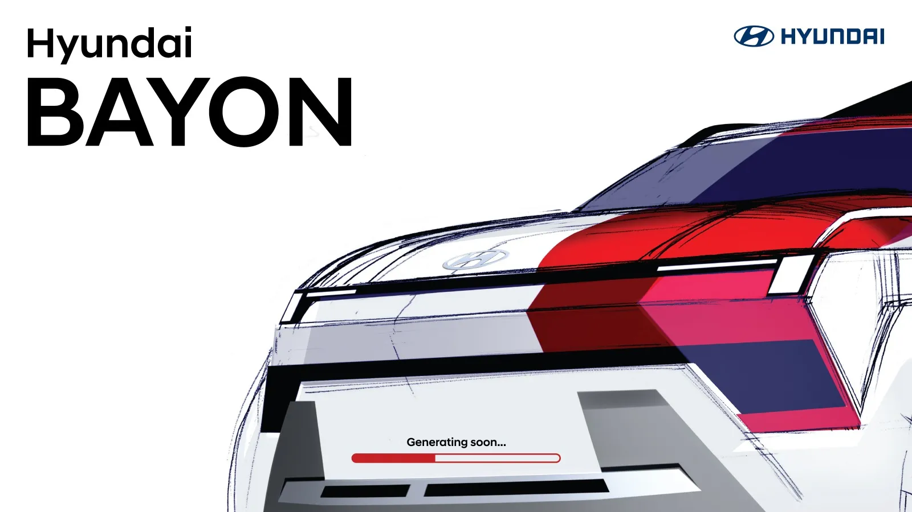
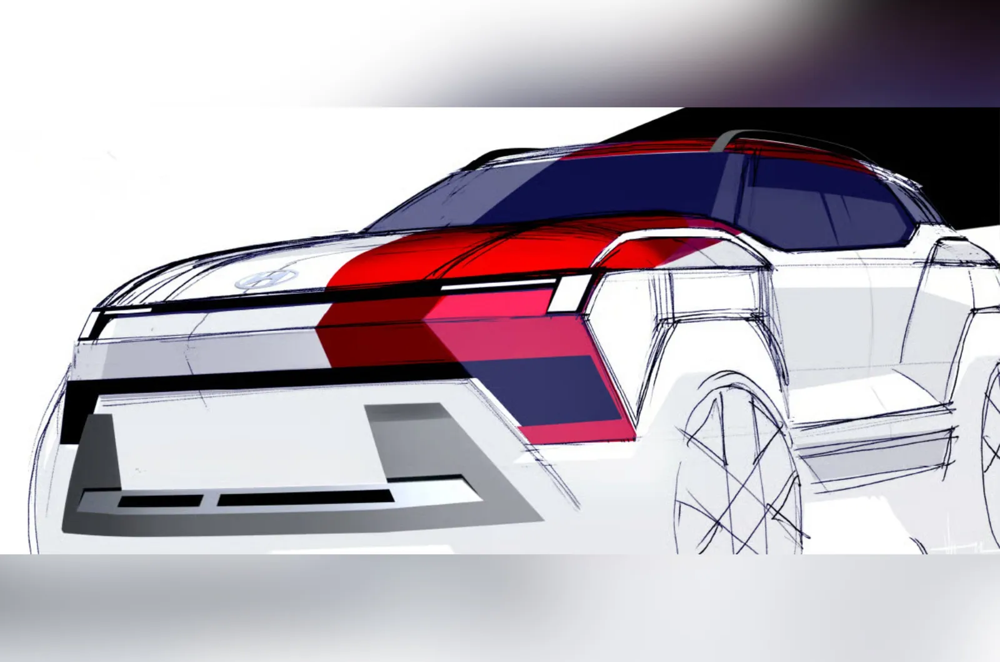
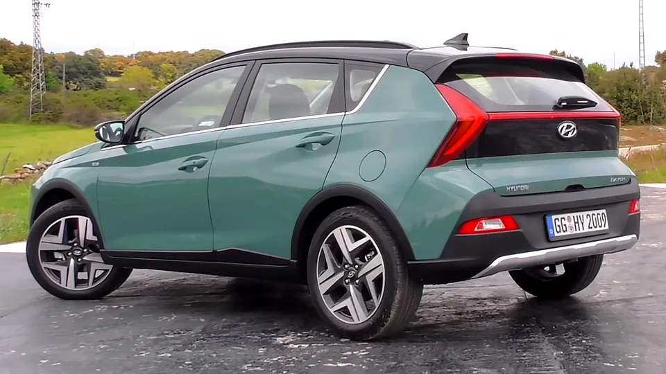
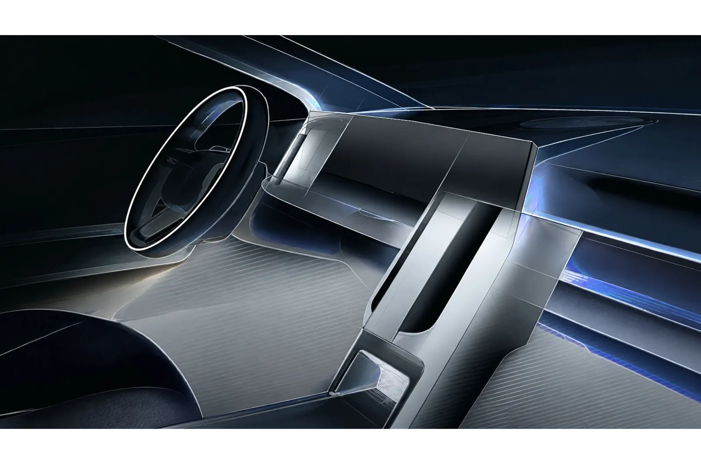
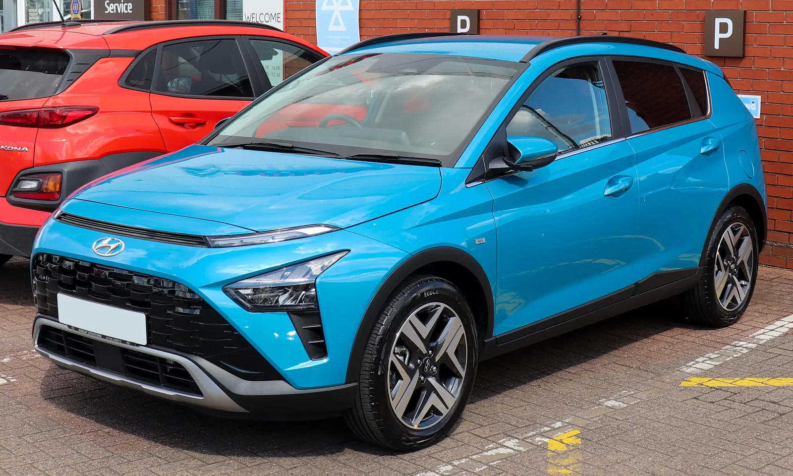

▲ 현대차가 공개한 2세대 바이욘 공식 디자인 스케치 ⓒ Hyundai Motor
둥글고 낮았던 그 차, 이번엔 아예 다른 차처럼 보인다.
현대차가 2021년 유럽 전략형 소형 SUV로 내놓은 바이욘(Bayon)의 2세대 공식 디자인 스케치를 공개했다. i20 해치백을 기반으로 하면서도 해치백에 가까운 매끈한 실루엣을 갖췄던 1세대와 달리, 2세대는 각진 실루엣과 커진 존재감으로 완전히 다른 인상을 준다. 왜 지금, 이렇게까지 방향을 틀었을까.
1. 스케치로 먼저 보여준 것들
현대차가 이번에 공개한 것은 완성차 사진이 아니라 공식 디자인 스케치다. 자동차 업체들이 신차를 스케치 단계에서 예고하는 경우, 실제 양산차와 세부 디테일이 달라질 여지는 있지만 전체적인 실루엣과 디자인 방향성만큼은 대체로 유지되는 편이다. 이번 스케치에서 가장 먼저 눈에 띄는 것은 차체 비례 자체가 달라졌다는 점이다. 1세대 바이욘이 i20 해치백의 지붕선과 유리 면적을 그대로 물려받아 '해치백에 크로스오버 껍데기를 씌운' 인상이 강했다면, 2세대는 지붕선이 높아지고 휠아치가 부풀어 오르면서 처음부터 SUV로 설계된 듯한 느낌을 준다.

▲ 후면 3/4 각도 스케치. 뒤로 갈수록 볼륨감이 커지는 펜더와 루프라인이 확인된다 ⓒ Hyundai Motor (via Autocar India)
2. 아트 오브 스틸, 소형 SUV에도 적용되다
2세대 바이욘에 적용되는 디자인 언어는 현대차가 최근 신차들에 순차 적용 중인 '아트 오브 스틸(Art of Steel)'이다. 강판을 접듯 명확한 면과 선을 강조하는 이 언어는 이미 대형 SUV·세단급 모델에서 먼저 선보인 바 있는데, 이번에 소형 SUV급까지 내려온 셈이다. 스케치에서 확인되는 요소는 다음과 같다.
| 부위 | 내용 |
|---|---|
| 헤드램프 | 분리형 LED 구성 — 상단 주간주행등과 하단 메인 램프 분리 |
| 하체 | 대형 스키드 플레이트로 오프로드 감성 강조 |
| 펜더 | 입체적으로 부풀린 형태, 휠아치 존재감 강화 |
| 벨트라인 | 뒤로 갈수록 올라가는 라인 — 역동적 인상 |
| 전체 비례 | 해치백형 유선형 실루엣 → 박스형 정통 SUV 실루엣 |
현대차가 소형 SUV 세그먼트에서 굳이 '더 SUV답게' 방향을 튼 이유는 명확하다. 이 체급은 코나·베뉴 같은 상위 모델과 경계가 가까운 만큼, 해치백 이미지를 벗어야 SUV 구매층을 온전히 흡수할 수 있다는 판단이 깔린 것으로 보인다.

▲ 1세대 바이욘 후면부. 2세대에서는 후면 볼륨감도 함께 커질 것으로 예상된다 ⓒ Wikimedia Commons
3. 실내는 신형 i20 공유 가능성
바이욘은 플랫폼과 파워트레인을 i20 해치백과 공유해온 만큼, 2세대 실내 역시 신형 i20의 디지털 콕핏을 기반으로 할 가능성이 높게 점쳐진다. 신형 i20 상위 트림에 적용된 12.3인치 듀얼 디스플레이 구성이 바이욘에도 이어질 것이라는 전망이 나온다. 이후 현대차가 공개한 실내 디자인 스케치에서도 스티어링 휠 너머로 나란히 이어지는 트윈 스크린과 세로형 센터페시아 구조가 확인됐지만, 정확한 화면 크기는 여전히 공식 확인되지 않았다.

▲ 현대차가 공개한 2세대 바이욘 실내 디자인 스케치 ⓒ Hyundai Motor (via Autocar India)
📍 바이욘과 i20의 관계
바이욘은 별도 모델이 아니라 i20 해치백의 크로스오버 파생형으로 출발했다. 2020년 첫 공개 당시부터 지금까지 플랫폼·엔진 라인업을 i20과 공유해왔고, 이번 2세대 전환에서도 이 관계는 유지될 것으로 보인다. 다만 디자인만큼은 형제 차종과 확실히 구분되는 방향으로 가고 있다.
4. 인도 먼저, 유럽은 그다음
바이욘은 원래 유럽 전략 모델로 기획된 차다. 그런데 2세대는 인도 시장에 먼저 공개된 뒤 유럽과 중동으로 확대되는 순서를 밟을 전망이다. 현지 생산까지 검토되는 것으로 알려졌다. 유럽 쪽 일정은 조금 더 구체적으로 나왔는데, 현대 유럽 CEO 자비에 마르티네는 2세대 바이욘이 향후 18개월 내 출시될 것이라고 밝혔다.
| 지역 | 전망 |
|---|---|
| 인도 | 수주 내 공개 예정, 현지 생산 가능성 |
| 유럽 | 현대 유럽 CEO 확인 — 향후 18개월 내 출시 |
| 중동 | 인도·유럽 이후 순차 확대 전망 |
자세한 공개 일정은 현대차 공식 발표를 통해 확인할 수 있다. 오토헤럴드 원문 바로가기

▲ 1세대 바이욘. 코나와 베뉴 사이 좁은 틈에서 경쟁해온 만큼, 2세대는 SUV 정체성을 더 뚜렷이 내세운다 ⓒ Wikimedia Commons
5. 스케치 단계에서 아직 모르는 것들
✅ 이번 공개에서 확인되지 않은 것
· 파워트레인 — 가솔린·마일드하이브리드 구성이 유지될지, 전동화 버전이 추가될지 미확정
· 정확한 실내 사양 — 12.3인치 듀얼 디스플레이는 신형 i20 기반 추정치일 뿐, 공식 확인 아님
· 국내 출시 여부 — 바이욘은 유럽 전략 모델로 국내 출시 계획은 별도로 확인된 바 없음
· 정확한 공개일 — 인도는 "수주 내", 유럽은 "18개월 내"라는 범위만 제시된 상태
6. 관전 포인트 — SUV 경계 다툼
소형 SUV 시장은 이제 해치백 파생형만으로는 버티기 어려운 구간이 됐다. 경쟁사들이 잇따라 정통 SUV 비례를 강조한 모델을 내놓는 가운데, 현대차 역시 바이욘을 통해 '해치백 냄새'를 지우는 방향으로 움직이고 있다. 이번 스케치가 실제 양산차로 이어졌을 때, 코나·베뉴와의 체급 경계를 얼마나 명확히 그어낼지가 관전 포인트다.
7. 요약
현대차가 2세대 바이욘의 공식 디자인 스케치를 공개했다. 낮고 유선형이던 해치백형 실루엣 대신 각진 정통 소형 SUV 비례를 적용했고, 아트 오브 스틸 디자인 언어와 분리형 LED 헤드램프, 대형 스키드 플레이트가 특징이다.
실내는 신형 i20 기반 디지털 콕핏을 공유할 가능성이 높게 점쳐지지만 공식 확인되지는 않았다. 파워트레인 등 세부 사양도 아직 베일에 싸여 있다.
출시는 인도가 먼저다. 수주 내 인도 공개가 예상되며, 유럽은 현대 유럽 CEO가 밝힌 대로 향후 18개월 내, 중동은 그 이후 순차 확대될 전망이다.